Cara memakai sistem, langkah demi langkah, dari menambah supplier sampai mencocokkan rekening koran. Setiap langkah di dokumen ini sudah dijalankan dalam simulasi terhadap database yang sama dengan sistem live.
Versi 23 September 2026 · dibuat otomatis dari tabel pengetahuan John Lau (ops_asst.processes). Gambar diambil dari mode demo, jadi angkanya contoh.
1. Menambah supplier dan barang
2. Membuat permintaan pembelian (PR)
3. Persetujuan barang (papan rapat dan Google Chat)
4. Membuat, mengonfirmasi dan mengirim purchase order (PO)
5. Mencatat barang datang (penerimaan)
6. Membayar PO (DP atau termin) dari halaman PO
7. Membayar baris PR dan mencatatnya ke buku besar
8. Melengkapi transaksi di buku besar
9. Verifikasi bukti yang masuk (kotak verifikasi)
10. Mencocokkan rekening koran dengan buku besar
Sebelum mulai
Siapa mengerjakan apa. Staf procurement membuat PR, PO dan mencatat barang datang. Pimpinan (pemegang approve_goods) menyetujui barang dan mengonfirmasi PO. Keuangan (pemegang post_ledger) mencatat pembayaran ke buku besar, memverifikasi bukti, dan mencocokkan rekening koran. Tombol yang bukan bagian Anda tetap terlihat, tapi sistem akan menolak dengan alasan yang jelas.
Satuan kerjanya adalah baris. Satu PR bisa berisi banyak baris, dan tiap baris disetujui, dibayar dan diterima sendiri-sendiri. Status baris dihitung sistem, tidak pernah diketik.
Tanya John Lau kapan saja. Tombol John Lau ada di pojok kanan bawah setiap halaman. Tanyakan "bagaimana cara membuat PO?" atau "saya sudah submit PR, terus apa?". Panduannya tetap terbuka saat Anda pindah halaman, dan langkah yang sesuai dengan halaman yang sedang dibuka ditandai you are here. Percakapan tersimpan, jadi tidak hilang walaupun halaman di-refresh.
Supplier dan barang adalah daftar yang dipakai semua dokumen. Nama yang diketik selalu diterima supaya pembelian tidak terjadi di luar sistem; kurasi (merapikan dan menggabungkan duplikat) dilakukan belakangan.
Buka Master data → Suppliers, tekan tombol tambah, ketik nama supplier.
Kenapa: Nama apa pun diterima dan langsung bisa dipakai. Supplier baru belum dikurasi: muncul di daftar, belum muncul di dropdown pilihan sampai dikurasi.
— → belum dikurasi
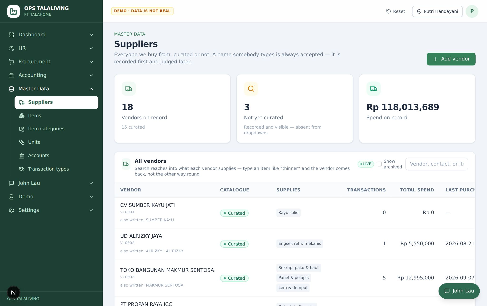
Buka Master data → Items untuk menambah barang: nama, kategori, dan satuan dasar.
Kenapa: Kategori harus dipilih dari daftar yang ada; kategori yang tidak dikenal ditolak (no_such_category). Kode barang dibuat otomatis (I-00001).
Kalau satuannya belum ada, tambahkan di Master data → Units, beserta konversinya.
Kenapa: Satuan dan konversi harus benar karena jumlah di PR, PO dan stok dihitung dari situ.
PR adalah permintaan barang atau jasa, satu dokumen berisi beberapa baris. Satuan kerjanya adalah baris: tiap baris disetujui, dibayar dan diterima sendiri-sendiri.
Buka Procurement → Requests, tekan New request.
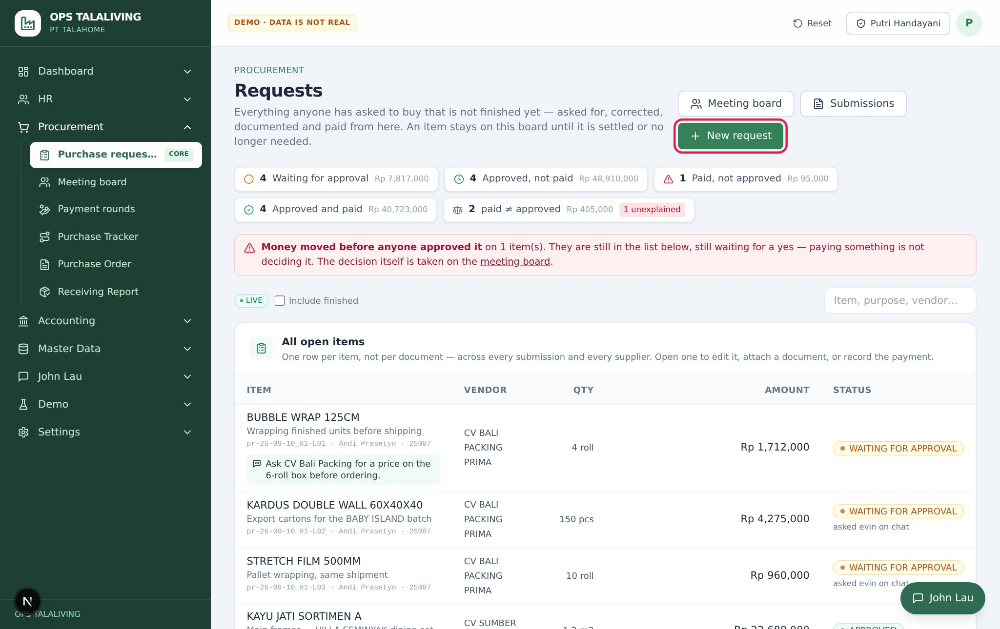
Pilih proyek, lalu isi tiap baris: barang, vendor, jumlah, satuan dan harga satuan. Nilai baris dihitung dari jumlah × harga.
Kenapa: Baris jasa (misalnya ongkos kirim) tidak punya jumlah: nominalnya diketik langsung. Kalau dihitung ulang dari jumlah × harga, hasilnya nol.
— → PR: DRAFT
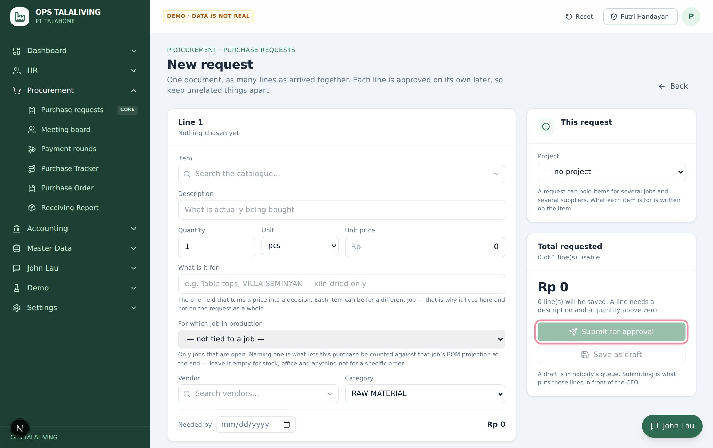
Tekan Submit for approval. Kalau belum siap, simpan sebagai draft dulu.
Kenapa: PR tanpa baris ditolak (lines_required). PR yang sudah disubmit tidak bisa disubmit lagi (already_submitted).
PR: DRAFT → PR: SUBMITTED · baris: WAITING FOR APPROVAL
Lampirkan bukti harga di tiap baris (penawaran, link toko, atau chat vendor) dari laci baris.
Kenapa: Baris tanpa bukti harga tidak bisa dikirim untuk disetujui dan tidak bisa disetujui (support_required).
Tanya-jawab
Apa bedanya status PR dan status baris? Dokumen PR hanya DRAFT atau SUBMITTED. Yang bergerak adalah barisnya: WAITING FOR APPROVAL → APPROVED → PAID → COMPLETED. Status baris dihitung dari persetujuan dan pembayaran, tidak diketik.
Berikutnya: Persetujuan barang (papan rapat dan Google Chat)
Pimpinan memutuskan baris mana yang boleh dibeli dan berapa nilainya. Persetujuan barang berbeda dari persetujuan uang, dan harus ada sebelum memesan ke vendor. Setiap angka yang disetujui harus punya bukti harga.
Buka Procurement → Meeting board. Baris yang menunggu keputusan ada di sini, dengan total yang diminta.
baris: WAITING FOR APPROVAL → —
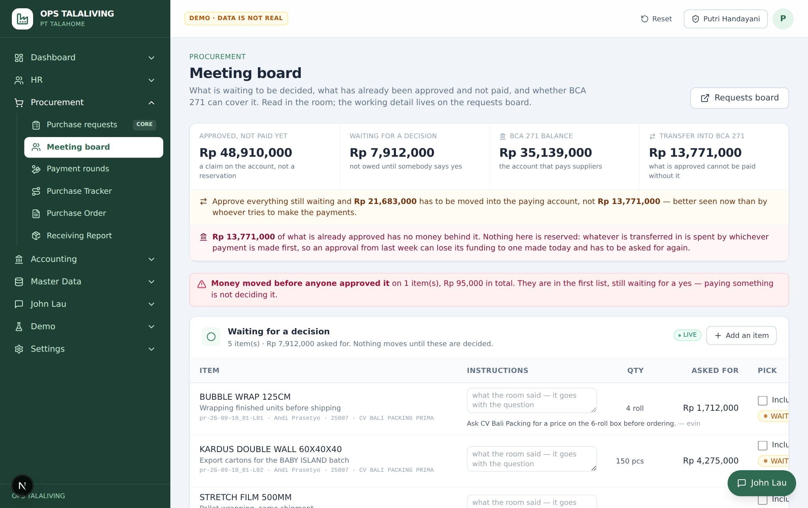
Kalau pimpinan tidak di ruangan: centang barisnya lalu tekan Send N to the approver on Chat. Kartu persetujuan dikirim ke Google Chat pemegang approve_goods.
Kenapa: Yang dikirim harus punya bukti harga, karena pimpinan tidak bisa memeriksa angka tanpa bukti dari HP. Kalau tidak ada yang memegang approve_goods, pengiriman ditolak (no_approver).
— → menunggu jawaban
Pimpinan menjawab dari kartu di Google Chat: setuju atau tidak.
Kenapa: Yang tercatat adalah akun pimpinan yang menjawab, bukan laptop rapat.
baris: WAITING FOR APPROVAL → baris: APPROVED
Kalau diputuskan di rapat: pemegang approve_goods mencentang baris, boleh mengurangi jumlah atau nominalnya, menambah instruksi, lalu tekan Approve this.
Kenapa: Staf procurement tidak bisa menyetujui (authority_required). Nominal yang disetujui boleh lebih kecil dari yang diminta; yang diminta tetap tercatat.
baris: WAITING FOR APPROVAL → baris: APPROVED
Tanya-jawab
Siapa yang bisa menyetujui? Hanya orang yang memegang wewenang approve_goods. Staf procurement tidak bisa menyetujui barisnya sendiri. Kartu Chat dikirim ke pemegang wewenang itu, bukan ke nama yang ditulis tangan.
Kenapa kirim ke Chat ditolak support_required? Baris yang dikirim belum punya bukti harga. Lampirkan penawaran, link toko, atau tangkapan chat vendor di laci baris PR, lalu kirim lagi.
Berikutnya: Membuat, mengonfirmasi dan mengirim purchase order (PO)
4
Membuat, mengonfirmasi dan mengirim purchase order (PO)
PO adalah janji atas nama perusahaan kepada vendor. Dibuat sebagai draft, dikonfirmasi pimpinan, lalu di-issue. Sebelum di-issue tidak ada yang kita hutangi; sesudahnya uang muka (DP) sudah menjadi kewajiban.
Buka Procurement → Purchase Orders (atau Tracker), tekan Add new PO, pilih vendor. Di tiap baris, pilih baris PR yang sudah disetujui di From request line — barang, jumlah, satuan dan harganya terisi dari yang disetujui.
Kenapa: Hanya baris yang sudah APPROVED yang bisa dipesan (line_not_approved), satu baris PR hanya di satu PO yang masih berjalan (line_already_ordered), dan satuannya harus sama (uom_differs). Baris tanpa jumlah — ongkir, DP — adalah uang, bukan barang: dibayar lewat barisnya, tidak dipesan (lump_sum_line).
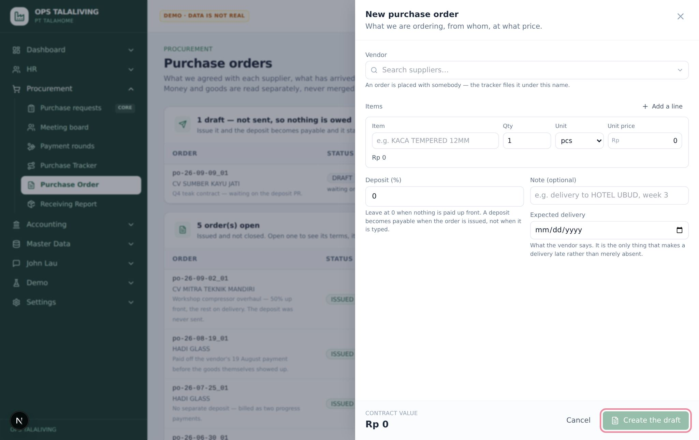
Periksa atau lengkapi barisnya: barang, jumlah, satuan, harga satuan. Baris yang tidak berasal dari PR (misalnya kontrak tetap) boleh diketik langsung. Isi persen DP kalau ada uang muka, dan tanggal barang diharapkan datang. Tekan Create the draft.
Kenapa: Harga kosong ditolak (price_required) — nilai kontrak harus disepakati. Kalau ada DP, sistem membuat dua termin: DP saat PO di-issue dan pelunasan saat barang diterima.
— → PO: DRAFT
Kalau Anda staf: buka PO-nya dari daftar Purchase Orders, lalu tekan Ask leadership to confirm. Permintaan persetujuan dikirim ke Google Chat pemegang approve_goods. Kalau Anda pimpinan dan membuat PO sendiri, langkah ini dan berikutnya tidak perlu — konfirmasinya sudah tercatat saat PO dibuat.
Kenapa: PO tidak bisa di-issue sebelum dikonfirmasi pimpinan (not_approved), karena PO adalah janji atas nama perusahaan. PO yang sudah dikonfirmasi tidak dikirim lagi ke Chat (already_approved).
PO: DRAFT → PO: DRAFT · menunggu konfirmasi
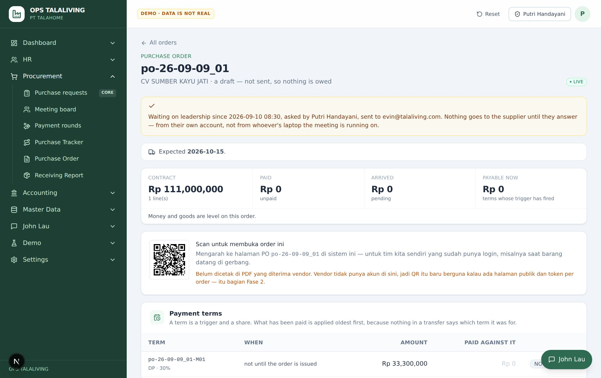
Pimpinan menjawab dari kartu di Google Chat (setuju, atau tolak dengan alasan), atau membuka PO yang sama di aplikasi dan menekan Confirm it.
Kenapa: Jawaban dari Chat hanya diterima dari orang yang dikirimi kartu, dan dicatat atas nama akunnya — bukan akun laptop rapat (D69). Menolak wajib dengan alasan. Kalau pembuat PO sendiri memegang approve_goods, sistem mencatatnya sebagai dikonfirmasi sendiri: tidak ada orang kedua yang memeriksa.
PO: DRAFT → PO: DRAFT · dikonfirmasi
Tekan Issue and send it, lalu cetak PO dari halaman cetaknya.
Kenapa: Sesudah di-issue, DP sudah menjadi kewajiban dan muncul sebagai "Payable now". Yang dicetak adalah dokumennya, tanpa menu dan sidebar.
PO: DRAFT → PO: ISSUED
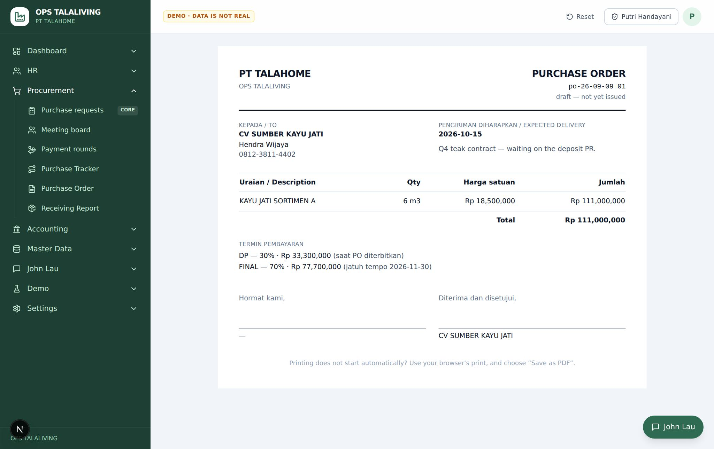
Tanya-jawab
Kenapa tombol Issue ditolak not_approved? PO harus dikonfirmasi pimpinan dulu. Tekan "Ask leadership to confirm", tunggu pimpinan menekan "Confirm it", baru "Issue and send it".
Kenapa baris PR tidak muncul di pilihan "From request line"? Yang muncul hanya baris yang sudah APPROVED (atau PAID), punya jumlah, belum dihapus, dan vendornya sama atau belum ditentukan. Kalau baris itu sudah ada di PO lain, sistem menolak dengan nama PO-nya.
Siapa yang harus menyetujui PO? Selalu pimpinan (pemegang approve_goods). Kalau pimpinan sendiri yang membuat PO, konfirmasinya tercatat otomatis saat dibuat. Kalau staf yang membuat, staf menekan "Ask leadership to confirm" dan pimpinan menjawab dari Google Chat atau dari halaman PO.
Barang yang datang dicatat terhadap baris PO, dengan foto barang (wajib) dan tanda terima yang ditandatangani. Tanpa tanda terima, penerimaan hanya dilaporkan dan belum dihitung sebagai barang diterima.
Buka Procurement → Tracker, pilih vendornya, lalu tekan Record arrival di baris PO yang barangnya datang.
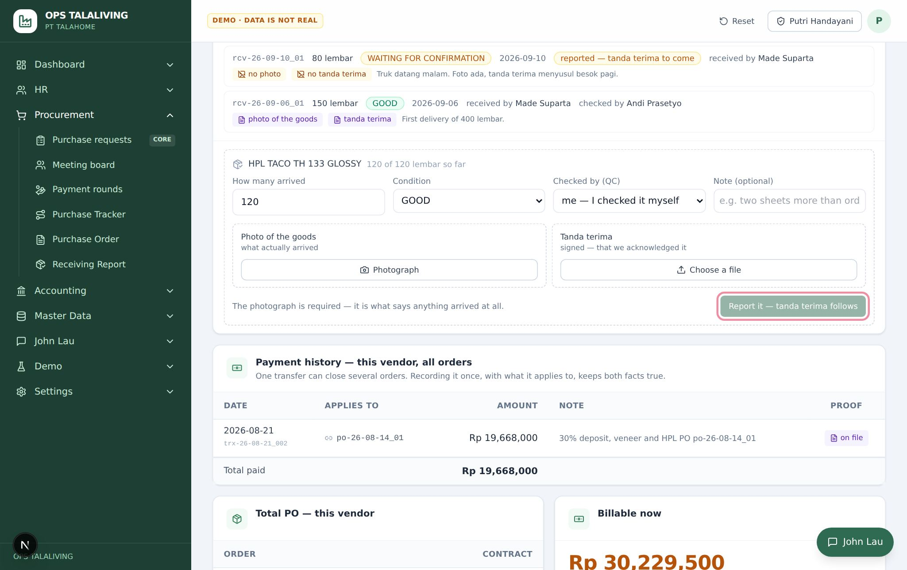
Isi jumlah yang datang dan kondisinya. Unggah foto barang (wajib) dan tanda terima yang ditandatangani, lalu tekan Record what arrived.
Kenapa: Tanpa foto ditolak (photo_required). Dengan foto dan tanda terima sekaligus, penerimaan langsung CONFIRMED. Kalau baris PO dibuat dari baris PR, baris PR-nya ikut bergerak: sebagian datang → PARTIAL; lengkap dan sudah lunas → COMPLETED.
— → penerimaan: CONFIRMED · baris PR: PARTIAL
Kalau tanda terima belum ada (misalnya barang datang malam), catat dengan foto saja. Besoknya buka Procurement → Penerimaan, tekan Complete it lalu Confirm it.
Kenapa: Penerimaan yang baru dilaporkan (REPORTED) belum bernilai apa pun sampai ada orang yang mengonfirmasi.
penerimaan: REPORTED → penerimaan: CONFIRMED
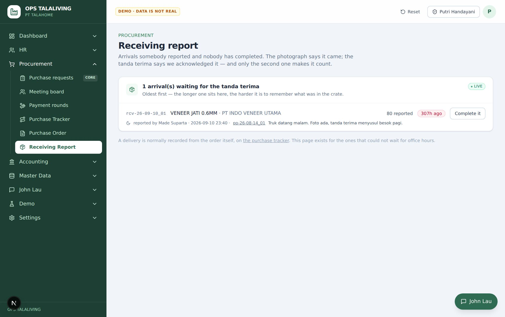
Tanya-jawab
Apakah stok gudang bertambah otomatis saat barang diterima? Belum. Penerimaan di procurement belum tersambung ke stok inventory; stok masuk dicatat terpisah di modul inventory.
Berikutnya: Membayar baris PR dan mencatatnya ke buku besar
Uang muka dan termin PO dibayar dari halaman PO-nya. Satu pembayaran menjadi satu baris buku besar, dan kalau PO dibuat dari baris PR, uangnya dibagi ke baris-baris PR itu sesuai nilainya — jadi halaman PO dan papan Requests menunjukkan pembayaran yang sama tanpa dicatat dua kali.
Buka Procurement → Purchase Orders, klik PO yang sudah ISSUED. Lihat Payable now — itu termin yang sudah jatuh tempo.
Kenapa: PO yang masih draft belum menimbulkan kewajiban apa pun, jadi belum bisa dibayar (not_issued).
PO: ISSUED → —
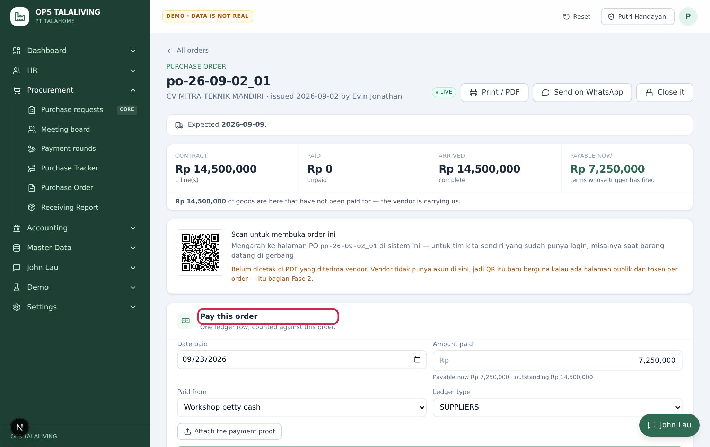
Di kartu Pay this order, isi tanggal, nominal (terisi otomatis sebesar Payable now), rekening sumber dan jenis transaksi, lalu unggah bukti transfer.
Kenapa: Tanpa bukti transfer ditolak (evidence_required). Nominal tidak boleh melebihi sisa kontrak (over_contract) — kelebihan bayar adalah urusan dengan vendor, bukan pembayaran PO. Hanya pemegang post_ledger (authority_required).
Tekan Post Rp… to the ledger.
Kenapa: Satu baris buku besar. Bagian untuk baris yang berasal dari PR tercatat di baris PR itu juga; sisanya hanya di PO.
PO: UNPAID → PO: PARTIAL / SETTLED
Tanya-jawab
Bayar DP lewat halaman PO atau lewat baris PR? Keduanya tercatat di dua sisi. Bayar dari halaman PO kalau yang ditagih vendor adalah termin PO (DP, pelunasan); bayar dari baris PR kalau yang dibayar adalah baris itu sendiri. Satu pembayaran tidak pernah terhitung dua kali.
Membayar dan menulis baris buku besar adalah satu tindakan: uang keluar dari rekening, tercatat sebagai transaksi, dan langsung dialokasikan ke baris PR yang dibayar. Hanya keuangan (pemegang post_ledger) yang bisa, dan selalu dengan bukti transfer.
Buka Procurement → Requests, klik baris yang sudah APPROVED untuk membuka lacinya.
Kenapa: Yang dibayar adalah baris yang sudah disetujui.
baris: APPROVED → —
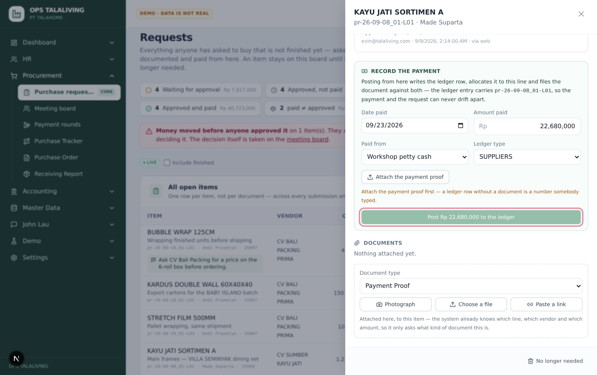
Di bagian pembayaran, pilih rekening sumber, jenis transaksi (misalnya SUPPLIERS), nominal, dan unggah bukti transfer.
Kenapa: Tanpa bukti transfer ditolak (evidence_required). Staf procurement tidak bisa mencatat pembayaran (authority_required) — hanya pemegang post_ledger. Kalau baris ini sudah dipesan di PO, pembayarannya otomatis terbaca juga di PO tersebut.
Tekan Post Rp… to the ledger.
Kenapa: Satu tindakan menulis transaksi di buku besar dan mengalokasikan uangnya ke baris PR. Saldo rekening langsung berkurang.
baris: APPROVED → transaksi: POSTED · baris: PAID
Transaksinya bisa dilihat di Accounting → Ledger.
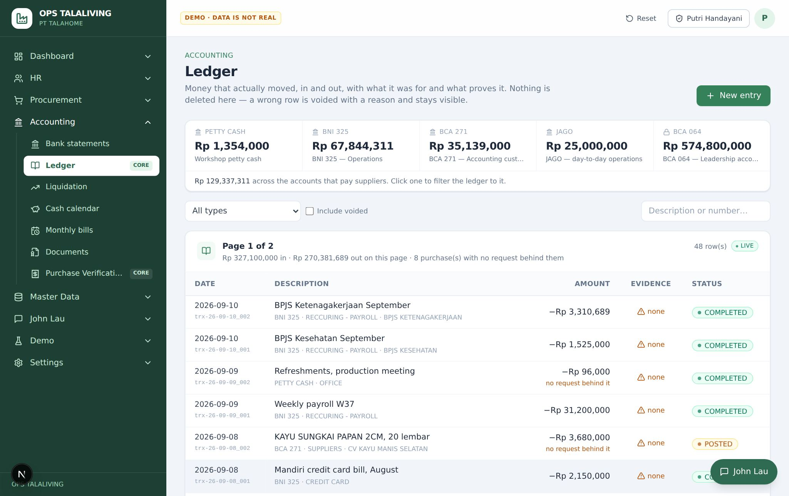
Tanya-jawab
Siapa yang boleh mencatat pembayaran? Hanya keuangan yang memegang wewenang post_ledger, dan selalu dengan bukti transfer.
Bagaimana membayar baris tanpa jumlah, seperti ongkir atau jasa borongan? Sama seperti baris lain: buka lacinya di Procurement → Requests, lalu tekan "Post Rp… to the ledger". Di buku besar, detailnya tercatat sebagai 1 lot × nominal yang dibayar. Baris PR-nya sendiri tetap tanpa jumlah, karena memang tidak pernah dikutip per satuan.
Transaksi yang sudah tercatat (POSTED) ditandai lengkap (COMPLETED) kalau nota atau bukti transfernya sudah menempel. Ini tanda bahwa transaksi itu sudah bisa dipertanggungjawabkan.
Buka Accounting → Ledger, klik transaksinya untuk membuka lacinya.
transaksi: POSTED → —
Pastikan nota atau bukti transfer sudah menempel, lalu tekan Mark completed.
Kenapa: Tanpa nota atau bukti transfer ditolak (document_required).
transaksi: POSTED → transaksi: COMPLETED
Tanya-jawab
Apa bedanya POSTED dan COMPLETED? POSTED berarti uangnya sudah tercatat di buku besar. COMPLETED berarti dokumennya (nota atau bukti transfer) sudah lengkap menempel.
Berikutnya: Mencocokkan rekening koran dengan buku besar
Foto nota dan bukti yang dikirim dari lapangan lewat Chat masuk ke kotak verifikasi sebagai PENDING. Keuangan memutuskan: jadikan transaksi, tempelkan ke transaksi yang ada, catat saja, atau tolak dengan alasan. Tidak ada yang dibuang.
Buka Accounting → Verifikasi. Bukti yang dikirim dari Chat menunggu di sini sebagai PENDING.
— → PENDING
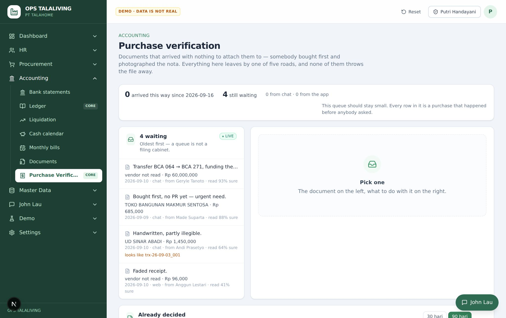
Pilih jalannya: Make a transaction (jadi transaksi baru), Link to a row (tempel ke transaksi yang sudah ada), Retro request line (dibeli dulu, disetujui belakangan), Note (catat saja), atau Reject.
Kenapa: Menolak wajib dengan alasan (reason_required), supaya pengirim tahu kenapa.
Rekening koran dari bank diunggah per periode, lalu tiap baris bank dicocokkan dengan transaksi di buku besar. Ini bukti bahwa yang tercatat benar-benar keluar atau masuk bank.
Buka Accounting → Rekening koran, unggah file rekening koran untuk satu rekening dan satu periode, lalu tekan Masukkan N baris.
Kenapa: Periode yang sama tidak bisa diunggah dua kali (period_already_uploaded).
— → baris bank: unmatched
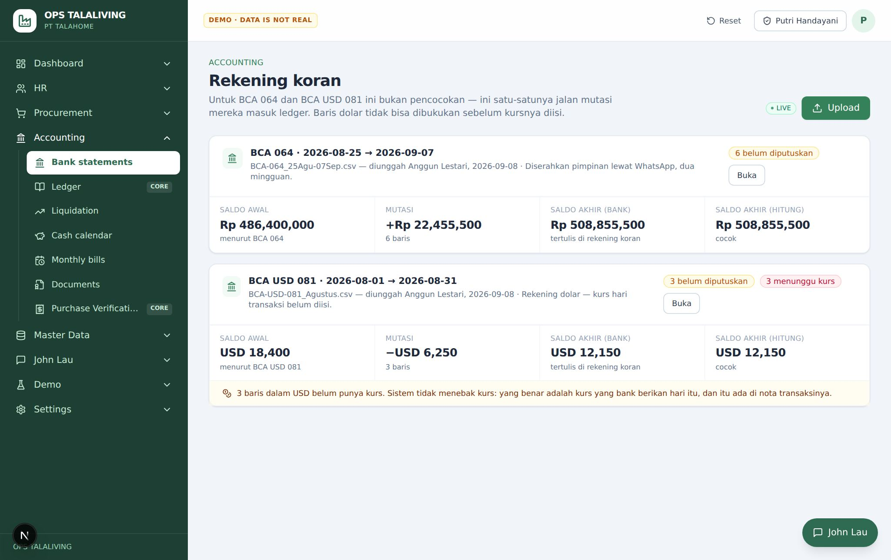
Untuk tiap baris bank, pilih saran di bawah Mirip dengan: untuk mencocokkannya dengan transaksi buku besar.
Kenapa: Nominal atau arah yang berbeda ditolak (amount_differs, direction_differs).
baris bank: unmatched → baris bank: matched
Baris bank yang belum ada di buku besar (misalnya biaya admin) dibukukan langsung dengan Bukukan, atau dilewati dengan alasan.
Kenapa: Membukukan dari rekening koran tetap menulis transaksi, jadi perlu wewenang post_ledger.
baris bank: unmatched → baris bank: booked / ignored
Tanya-jawab
Kenapa pencocokan ditolak amount_differs? Nominal di baris bank tidak sama dengan nominal transaksi di buku besar. Periksa lagi transaksinya; jangan dicocokkan ke transaksi yang berbeda nominalnya.
Temuan simulasi — yang belum berjalan sesuai SOP
Simulasi menemukan langkah-langkah berikut yang belum berjalan seperti yang ditulis di atas. Sudah dilaporkan ke IT; sampai diperbaiki, ikuti catatan di bawah.
Kenapa kartu persetujuan PO belum muncul di Google Chat pimpinan? Permintaannya sudah tercatat dan ditujukan ke pimpinan, tetapi pengirim kartu ke Google Chat untuk PO belum dipasang. Sementara itu pimpinan membuka PO di aplikasi (banner "Waiting on leadership") dan menekan "Confirm it".